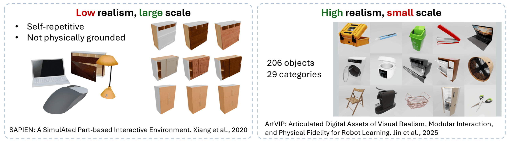
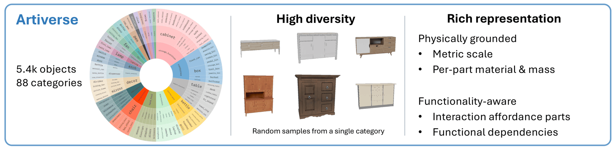
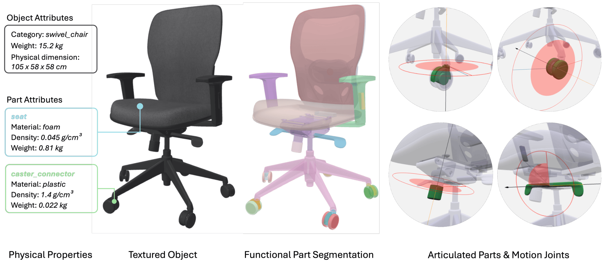
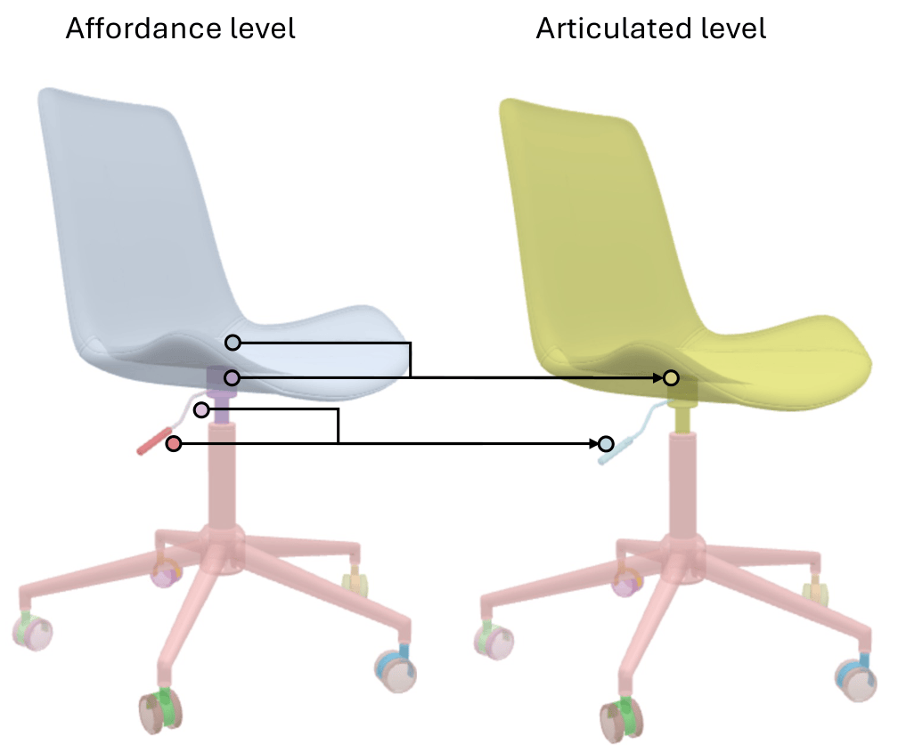
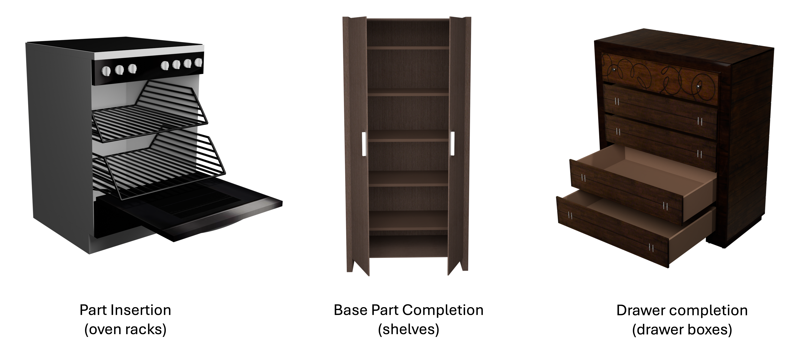
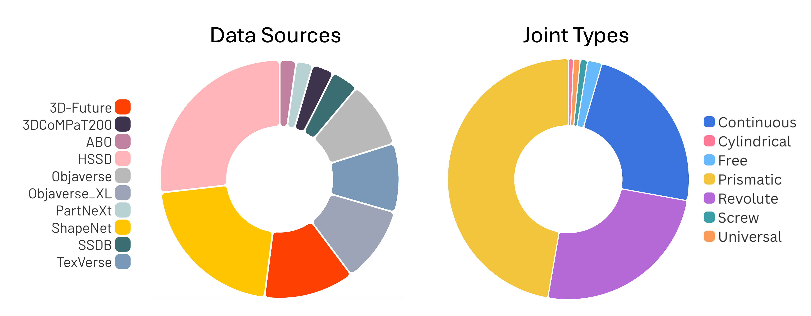
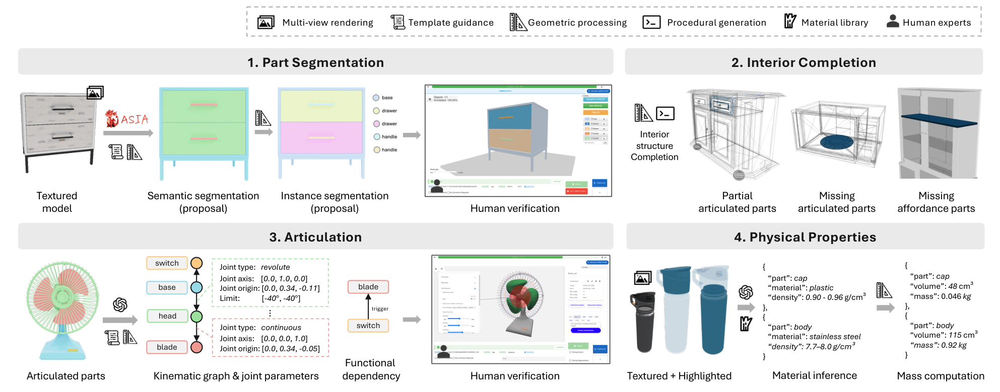

We present Artiverse, a diverse and physically grounded dataset of high-quality articulated 3D objects designed for realistic functional modeling and simulation.
Artiverse contains 5.4K human-authored objects across a broad range of 88 categories, aggregated from multiple 3D static repositories. Objects are annotated with functional parts, interior structures, realistic kinematic relationships and articulated joints including multi-DoF joints, and physical attributes such as metric scale, material, and mass.
We develop a semi-automated annotation pipeline that combines few-shot segmentation, geometric reasoning, vision-language model inference, and multi-stage human verification to achieve high-quality and efficient annotation, reducing manual annotation time by over 30%.
We demonstrate the value of Artiverse on tasks of part mobility analysis, articulated object generation, and physics-based interaction. Artiverse provides a data resource to advance functional understanding for articulated objects.

The existing synthetic datasets of articulated objects suffer from low diversity and realism. While more physically grounded alternatives emerge recently, their scale and diversity are still limited. To this end, we propose Artiverse — a physically grounded and diverse dataset with 5.4K annotated and curated articulated objects ranging in 88 categories.

Our data is richly annotated with functional parts, motion joints up to 3-DoF for articulation, kinematic tree, and physical properties including metric scale, per-part material, and mass. Artiverse offers a richer representation compared to prior articulated object datasets.

Our functional segmentation is hierarchical, with articulated parts consisting of affordance parts where applicable. The affordance parts are non-articulated parts that are valuable for human-object interaction, such as a handle of the lever and shelves in the body of the cabinet.

For motion joint, we extend motion types beyond common 1-DoF ones, some examples are shown below.
Many existing static 3D assets are lack of interior structures to enable realistic simulation and complete functionality. We managed to complete the missing geometric structures (including both articulated and affordance-oriented structure). Some examples are shown here.


(Left) Our data is diversely sourced from 10 static 3D datasets, carefully filtered and organized into 88 categories. (Right) The distribution of motion joint types highlights the presence of common 1-DoF and complex multi-DoF joints (e.g., universal), reflecting motion diversity.

In order to enable scalable data annotation, we introduce a semi-automated pipeline. The initial proposals for the annotations are produced by various models and heuristics, while humans come in to check and correct the automated proposals.
The pipeline consists of 4 modules. The first module is segmentation, where we leverage a few-shot image-based model that outputs segmentation over multiview images, then we employ a topology-aware segmentation propagation heuristic, mapping it to meshes. The next module outputs motion proposals, obtained via generalizable geometric heuristics leveraging descriptors like bounding boxes and areas of contact. The next step is interior completion, where we address the cases of completing existing articulated parts (i.e., drawers), adding missing articulated parts (i.e., microwave turntables) and affordance parts (i.e., shelves). Finally, we leverage heuristics to infer material, volume and mass attributes per part.
This work was funded in part by a CIFAR AI Chair, a Canada Research Chair, and NSERC Discovery grants, and supported by the Digital Research Alliance of Canada. We thank our annotators for their dedication in ensuring the data quality.
@inproceedings{iliash2026artiverse,
title={Artiverse: A Diverse and Physically Grounded Dataset for Articulated Objects},
author={Iliash, Denys and Liu, Jiayi and Fokin, Egor and Wu, Qirui and Mahdavi-Amiri, Ali and Savva, Manolis and Chang, Angel X.},
booktitle={Proceedings of the IEEE/CVF Conference on Computer Vision and Pattern Recognition (CVPR)},
year={2026}
}